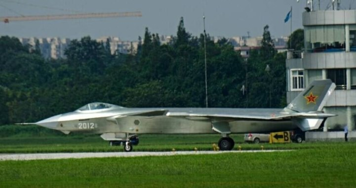
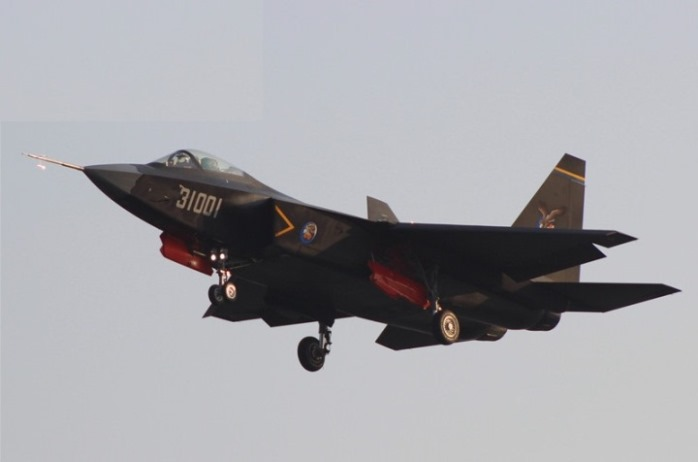
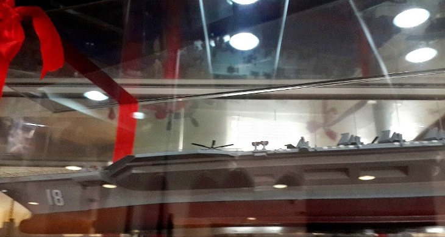

【空军】【海军】共军小道消息总匯
2014-07-22 16:29:00
原文网址：https://blog.udn.com/MengyuanWang/108908614
既然我是新写这个部落格，很多前几个月有关中共海空军的新闻都没有机会提起，所以乾脆在这里一锅端。这些小道消息还没有全部被证实，它们不一定是百分之百正确，我会以百分比来估计它们的可靠性。共军向来极为重视情报和反情报，保密工夫天下第一，像我这様的业余军事分析人是不可能拿到完全可靠的讯息的，不得不听听小道消息，再以我所知的背景来判断其可靠性，亦即所谓的educated guess。如果事后证实有猜错的，还请包含。
【J20】2012号的照片已经出现了很多了。这是原型机的第二架（此前从2011年一月出现的200X系列是生產験证机，相当于软体的Alpha版；原型机是Beta版；至于日本的“心神”，那是所谓的技术験证机，是给设计团队练习用的，完全没有量產的可能），和第一架2011号看来一模一様。十几年前F22的原型机做了十架，后来正式定型之后，大部分原型机也升级到量產版的标准，分发部队使用。J20极可能会遵循这个先例，那么正式量產就应该在2017年左右，正是五年前中共空军副司令员何为荣说漏了嘴时所预言的。J20有两个关键部件还没有完成：WS15引擎和全数位化AESA雷达；后者应该在2016年定型，所以大概赶得上第一批量產，但是WS15原就预定2017年才定型，而且有谣言说进度目前已经落后，所以八成是得从第二批量產才开始装备了，在那之前只能用俄制的AL31。（以上可信度95+%）据说中共用的AL31已经改进到99M3版，比太行引擎可靠，性能接近F22的F119引擎，不过也有人说2012号装的还是稍旧的99M2版。（可信度50%）
【310工程】一般媒体称之为J31，这絶对是错的。310工程是渖飞（渖阳飞机设计所，又名601所）内部自己搞的技术験证机，用来骗经费的，将来扶正成真正的JXX的可能性小于10%。
【017号航空母舰】去年六月在大连造船厰和江南造船厰都出现了缩水版的航母分段，八月习近平视察大连造船厰，九月大连造船厰的母公司宣布收到“特大级订单”，股票因此飞涨。小道消息指出习近平在视察之后，批准了订单，目前前几个分段已经接近完工，大连造船厰的最大型船台还在建造一艘超级油轮，今年底前完成后就轮到017号上船台，照片也将满天飞了。据称017号与辽寜号大同小异，主要的改进点在于把机库放大，塔台缩小，以搭载更多的J15。估计于2018年交船，2020年整个戦斗羣形成戦力。（可信度80%）
【018号航空母舰】本月初中共在一个内部的军品展摆出了018号航空母舰的模型，明确地证实了018号将配备有弹射系统，不过那会是旧式的蒸汽弹射还是全新的电磁弹射目前没有定论，我个人倾向于前者，原因是中共海军对蒸汽弹射已经研究了二十几年，技术已经成熟，而电磁弹射是近十年的新东西，只有一个研究团队，还要分心去研究新型反潜护卫舰（即传说中的057级）的电动机。中共海军在部署新科技上，向来是很稳健谨慎的。在动力方面，018号应该还是用烧重油的蒸汽轮机，而不是核子动力。总体看来，018号就像是中国版的小鹰号。估计于2019年或2020年在江南造船厰开建。（可信度55%）
【055级驱逐舰】四个月前，武汉船舶设计研究所建了055级的全尺寸陆上模型，用来测试各式雷达天线的电磁兼容性，所以055级在明年开建是可以确定的。至于技术指标还很难讲（目前可看到的有沿用自052D级的PJ38 130公厘主炮和沿自僚寜舰的1130近防炮和FL3000N近防飞弹，不过最重要的雷达和主飞弹舱还看不到，有未证实的消息指出飞弹舱数将是112个），但其满载排水量应该在12000吨以上，有说是12800吨的。这比美军现役的Ticonderoga级导弹巡洋舰还要大，应该也是同様用来指挥航母戦斗羣的水面舰只的。（可信度95%）
【039B潜艇】也就是所谓的元级潜艇。今年年初，武汉造船厂把停工已久的第九艘039B建成了，但是外型稍有修改以减低阻力和噪音，因此这艘应该叫做039BG才对。据说中共海军对039B的安静度非常不满意，所以不会再多建了，将等到后续的039C设计完成才会续建柴油电动潜艇。（可信度70%）
【093G潜艇】中共的第三代（即已退役的091级是第一代，091G是第二代）核子动力攻撃潜艇093级早有照片证明。目前的谣言主要在猜测第四代的093G是否已建成。中共对核子动力潜艇的保密比对其他装备更为严密，所以我很难确定答案何在；最近有谣言称093G和094G在中共的八一建军节将正式服役。至于再下一代的095级，刚于2012年立项研制，如果一切顺利，首艇将于2020年左右交付中共海军；即使有些延误，也应该能赶得上加入018号航母戦斗羣。（可信度50%）
【后注】加拿大《汉和防务评论》10月刊于2014年十月13日报导，大连造船厂2013年底已经举行了航母钢板的切割仪式，航母动力系统採用的是哈尔滨生產的锅炉，採用蒸汽轮机动力，而航母的钢板则是由上海宝山生產。
4 条留言
技术上是成熟，但材料和技术加工不过关(主要是蒸汽汽缸封闭不过关，使用寿命远远达不到要求)。有消息传出部分原蒸汽弹射人员转到电磁弹射研发团队，进度飞快跟美国只差2-5年。 研究新型反潜护卫舰有可能是054B，而不是057。 中共对核子动力潜艇的保密不是比对其他装备更为严密，而是中共等止研发核潜舰20年。第四代潜舰是095，静音标准要达到90年代美国海狼级水平。
核子动力潜艇的机密特别敏感，是连泄密的大神们也都尊重的。
095级要追上海狼级衹怕还有困难。中共在单壳体潜艇、自然循环核引擎以及大直径艇身三个关键技术上都完全没有经验，要一步而赶上美国几代下来精益求精的结果，是违反常理的。
至于蒸汽弹射的问题，如果你有出处，请列出。
http://www.xtexu.com/CN06/201210201428.html